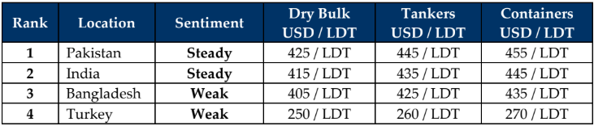

GMS Week 34 – METHOD TO THE MADNESS?
in Weekly Demolition Reports 25/08/2025

A week after the anticipated Trump – Putin (TP) meeting (chuckle at that one) last week, not much positive has come out of it, especially as Putin returned to Russia only to launch another offensive against Ukrainian oil refineries causing disruptions along the Druzhba pipeline. As oil traders still look for optimism under the current climate, in a slightly positive turn of events, U.S. oil reserves reportedly decreased by about 3 million barrels last week thanks to cheaper prices and a growing domestic demand, in what is seen as a potential force multiplier that could help boost oil prices in September – especially if this trend continues. In the interim, the (logical) conclusion of a bearish September helped oil futures report a 0.2% rise and end the week at USD 63/barrel, all while the trading index continued to dominate the expectations of ship owners as the Baltic Exchange’s Dry Index reported another increase, rising about 2.74% towards the end of the week regaining the earlier losses, thanks to the performances of the Cape, Panamax, and even smaller vessels indices that collectively contributed gains of 3.3%, 3%, and 1.4% to the overall index.
Ironically still, losses in various individual sectors along the entire dry bulk range across the recent past saw the overall benchmark index lose about 5% of its overall value, which would explain the recent (and ongoing) influx of tonnage into the West Coast Indian and even Pakistani waterfronts spanning several weeks now, including this one. And despite recent deliveries of a wide collection of sizes and types of vessels (especially in Alang), the overall sentiment in the Indian sub-continent remains on watchful footing while trying to surf the wakes of Trump’s ongoing tariff conundrums, which continue to confuse and frustrate global trade markets through what was hoped to have been a positive outcome to the “deal makers’ recent meeting with Putin raising the question, is there a method to this madness. Moreover, given the volumes that markets have been accustomed to, the comparatively (and maddeningly) slower summers of 2024 and even 2025 is certainly of concern, given that the industry clearly miscalculated 2025s recycling performance as being a recompensate for 2024s dearth of tonnage and most of the seriously overaged tonnage that has been trading since post-covid, would come for recycling in 2025, which clearly has not happened.
Prices have of course cooled and stayed at the current lower levels since the recent decline, which were further perpetuated by a lack of available end buyers post June-26, ever since the Hong Kong Convention kicked in (especially in Bangladesh as highlighted by their waterfront this week). Though there have been several large LDT LNGs sold for recycling recently and despite the arrival of yet another one at Alang’s waterfront this week, there has just not been the level of market activity at the bidding tables of late. All of this occurring just as DASR-backed Gadani recyclers have started to come back into the picture of late, taking both, negotiations and HKC upgrades seriously in order to stay relevant. Bangladesh remains the lowest placed all markets, with glimmers of occasional interest on select larger LDT units popping up as demand and pricing remain woeful. India has clearly been active on their share of non-ferrous units, while remaining cagey as tariff traumas sandwiched by potential sanctions by a clueless administration leaves them on edge. Turkey? Fun!
For Week 34 of 2025, GMS Market Rankings / vessel indications are as below.

📄 Download PDF: Ship-recycling-market-insight-Week-34-08-22-2025-Method_to_the_Madness.pdfSource: GMS,Inc. https://www.gmsinc.net/gms_new/index.php/web
 Translate
Translate{kind=link}